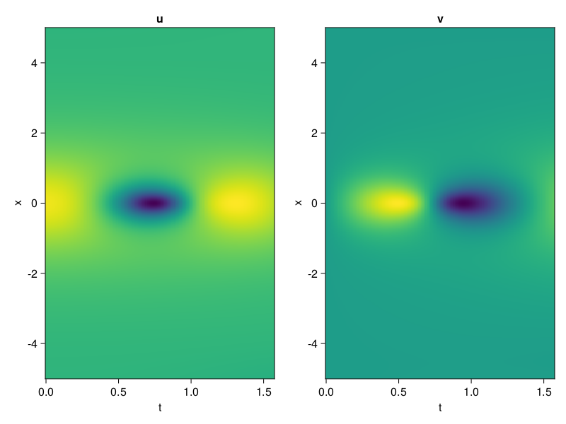
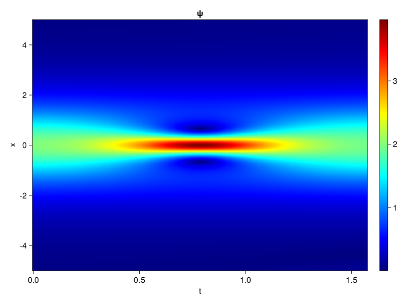
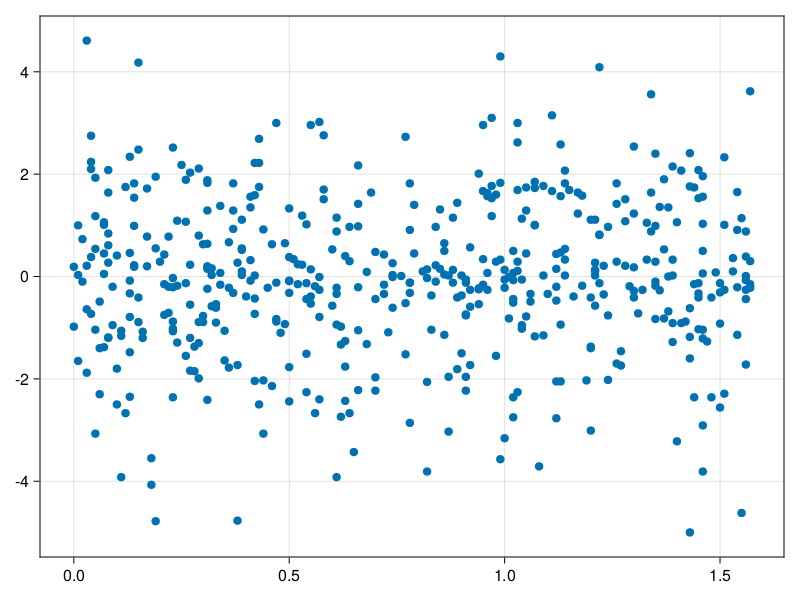

Schrödinger equation
The nonlinear Shrödinger equation is given by
\[\mathrm{i} \partial_t \psi=-\frac{1}{2} \sigma \partial_{x x} \psi-\beta|\psi|^2 \psi\]
Let $\sigma=\beta=1, \psi=u+v i$, the equation can be transformed into a system of partial differential equations
using ModelingToolkit, IntervalSets, Sophon, CairoMakie
using Optimization, OptimizationOptimJL
@parameters x,t
@variables u(..), v(..)
Dₜ = Differential(t)
Dₓ² = Differential(x)^2
eqs=[Dₜ(u(x,t)) ~ -Dₓ²(v(x,t))/2 - (abs2(v(x,t)) + abs2(u(x,t))) * v(x,t),
Dₜ(v(x,t)) ~ Dₓ²(u(x,t))/2 + (abs2(v(x,t)) + abs2(u(x,t))) * u(x,t)]
bcs = [u(x, 0.0) ~ 2sech(x),
v(x, 0.0) ~ 0.0,
u(-5.0, t) ~ u(5.0, t),
v(-5.0, t) ~ v(5.0, t)]
domains = [x ∈ Interval(-5.0, 5.0),
t ∈ Interval(0.0, π/2)]
@named pde_system = PDESystem(eqs, bcs, domains, [x,t], [u(x,t),v(x,t)])\[ \begin{align} \frac{\mathrm{d}}{\mathrm{d}t} u\left( x, t \right) =& - \frac{1}{2} \frac{\mathrm{d}^{2}}{\mathrm{d}x^{2}} v\left( x, t \right) - \left( \left|u\left( x, t \right)\right|^{2} + \left|v\left( x, t \right)\right|^{2} \right) v\left( x, t \right) \\ \frac{\mathrm{d}}{\mathrm{d}t} v\left( x, t \right) =& \frac{1}{2} \frac{\mathrm{d}^{2}}{\mathrm{d}x^{2}} u\left( x, t \right) + \left( \left|u\left( x, t \right)\right|^{2} + \left|v\left( x, t \right)\right|^{2} \right) u\left( x, t \right) \end{align} \]
pinn = PINN(u = Siren(2,1; hidden_dims=16,num_layers=4, omega = 1.0),
v = Siren(2,1; hidden_dims=16,num_layers=4, omega = 1.0))
sampler = QuasiRandomSampler(500, (200,200,20,20))
strategy = NonAdaptiveTraining(1,(10,10,1,1))
prob = Sophon.discretize(pde_system, pinn, sampler, strategy)OptimizationProblem. In-place: true
u0: ComponentVector{Float64}(u = (layer_1 = (weight = [0.19247925281524658 -0.19235759973526; 0.2102726697921753 0.4347524642944336; … ; -0.05986732244491577 -0.26004767417907715; -0.10231608152389526 0.19037562608718872], bias = [0.0; 0.0; … ; 0.0; 0.0;;]), layer_2 = (weight = [0.0016871870029717684 -0.4458322525024414 … 0.23860622942447662 0.11616310477256775; 0.4684581458568573 0.12047692388296127 … -0.10054370760917664 -0.5075415372848511; … ; 0.2897949516773224 0.3424295485019684 … 0.4489120543003082 -0.05807144194841385; -0.16775517165660858 -0.5461224317550659 … -0.1409004181623459 -0.5013825297355652], bias = [0.0; 0.0; … ; 0.0; 0.0;;]), layer_3 = (weight = [0.13837510347366333 0.5262616276741028 … -0.5260028839111328 0.3798275589942932; -0.5047162771224976 0.030768169090151787 … 0.3443795442581177 -0.46302780508995056; … ; 0.45695677399635315 -0.5761431455612183 … -0.16047637164592743 0.04558646306395531; 0.47546708583831787 -0.3713405728340149 … 0.4623352587223053 0.560840904712677], bias = [0.0; 0.0; … ; 0.0; 0.0;;]), layer_4 = (weight = [-0.5386062264442444 0.6091989874839783 … 0.45043566823005676 0.02227996475994587; -0.1231851652264595 0.44753557443618774 … -0.2472517490386963 -0.5265644788742065; … ; -0.2523919939994812 -0.0753592699766159 … 0.3247639536857605 0.08655060827732086; 0.04910961166024208 0.13874974846839905 … 0.2933638095855713 -0.11024773120880127], bias = [0.0; 0.0; … ; 0.0; 0.0;;]), layer_5 = (weight = [0.34753403067588806 0.3185233473777771 … -0.4512447118759155 0.2857459783554077], bias = [0.0;;])), v = (layer_1 = (weight = [0.43257808685302734 -0.2826906442642212; 0.19721722602844238 0.24678903818130493; … ; 0.02278757095336914 -0.11084669828414917; 0.3590623736381531 -0.3630187511444092], bias = [0.0; 0.0; … ; 0.0; 0.0;;]), layer_2 = (weight = [0.3730119466781616 0.5972577929496765 … -0.09995626658201218 0.5506821274757385; 0.30237388610839844 0.06254170089960098 … 0.06589920818805695 0.5432922840118408; … ; 0.42005330324172974 -0.5559264421463013 … 0.3566296696662903 -0.29729926586151123; 0.18399390578269958 -0.06108563393354416 … 0.10024703294038773 -0.4724036157131195], bias = [0.0; 0.0; … ; 0.0; 0.0;;]), layer_3 = (weight = [0.5080466866493225 -0.4529699385166168 … -0.15614189207553864 -0.35850265622138977; 0.36197176575660706 0.1649654656648636 … -0.009383919648826122 0.5634893178939819; … ; -0.03578096628189087 0.2579847276210785 … -0.17724530398845673 0.27919667959213257; -0.12273110449314117 0.33501386642456055 … 0.08311870694160461 -0.12124255299568176], bias = [0.0; 0.0; … ; 0.0; 0.0;;]), layer_4 = (weight = [-0.18136055767536163 -0.37721604108810425 … -0.29044926166534424 0.1188034638762474; -0.17249779403209686 0.32732918858528137 … -0.01874477043747902 0.1547113060951233; … ; -0.016065508127212524 -0.16953033208847046 … 0.4255337417125702 -0.4392509460449219; -0.14750629663467407 -0.12440033257007599 … 0.5680013298988342 0.48932090401649475], bias = [0.0; 0.0; … ; 0.0; 0.0;;]), layer_5 = (weight = [-0.16101036965847015 -0.2678326368331909 … 0.42896053194999695 -0.08017656952142715], bias = [0.0;;])))Now we train the neural nets and resample data while training.
function train(pde_system, prob, sampler, strategy, resample_period = 500, n=10)
bfgs = BFGS()
res = Optimization.solve(prob, bfgs; maxiters=2000)
for i in 1:n
data = Sophon.sample(pde_system, sampler)
prob = remake(prob; u0=res.u, p=data)
res = Optimization.solve(prob, bfgs; maxiters=resample_period)
end
return res
end
res = train(pde_system, prob, sampler, strategy)u: ComponentVector{Float64}(u = (layer_1 = (weight = [0.1684141475987615 -0.040858519986020275; 0.23566552153913284 0.323234461730302; … ; 0.02806568500032775 -0.6234960886285438; -0.4986750468734435 0.34301698549388493], bias = [-0.10013642527174609; -0.27149271272438297; … ; 0.5744154791769381; 0.08417046898351972;;]), layer_2 = (weight = [0.0454189894189043 -0.39405759052836936 … 0.5918727752457813 0.1844270745238578; 0.716377294434335 0.39817311607864647 … -0.27157695515202157 -0.7779532643389776; … ; 0.36412466968452767 0.20339141110933287 … 0.27046108096711835 -0.016505767477826755; -0.1682915206549452 -0.8479723072347383 … 0.2517844872198861 -0.6345766137078066], bias = [0.17158680520515276; -0.20382404280512317; … ; -0.21277907207988733; 0.15762620420160503;;]), layer_3 = (weight = [-0.08523696043322294 0.37797282894592027 … -0.5023239539914509 0.3227150684781065; -0.36181761685623604 0.4643957748161091 … 0.4192721723429945 -0.6098516491060987; … ; 0.7507497913467934 -0.4873273336188598 … 0.06867069280065047 -0.30405267772596223; 0.32997756412833634 0.1774711318663293 … 0.4154216112453453 0.5794634609232281], bias = [-0.18208108118800825; -0.2939104963053161; … ; -0.028219313370129253; 0.12042948111085064;;]), layer_4 = (weight = [-0.33692323018819437 0.6948816509304476 … 0.7092340787572353 -0.15973968397891378; -0.2035357218850626 0.4735818028238139 … -0.1354503569470882 -0.24168769878050797; … ; -0.5871614326723392 -0.18056461405010713 … 0.6511669844318418 0.009108973774184546; 0.3701220670838243 0.2084612503681184 … 0.47714580151765645 -0.3564726156480933], bias = [-0.12175865070492045; -0.1463044742055001; … ; 0.3187156499564459; -0.2687505007043332;;]), layer_5 = (weight = [0.45200674812849984 0.8956290629449876 … -0.29649779858194536 0.24648102570287028], bias = [-0.0685007182613505;;])), v = (layer_1 = (weight = [0.34120338235005526 -0.17048033959536973; 0.1959335249979274 0.42987493196101584; … ; -0.39462717070796327 -0.2504328087800142; 0.38019186475731576 -0.3404082429405199], bias = [0.09005181917615206; -0.17202761851182258; … ; 0.08098100811213342; 0.13905226699696277;;]), layer_2 = (weight = [0.4032218240914708 0.8129943980386616 … -0.10254858867337978 0.6080681426041978; 0.4599985439255301 0.15015199759955278 … 0.07593735709916535 0.6958160031508871; … ; 0.6043010684364521 -0.5359568265000941 … 0.2721763055385744 -0.06534096001570446; 0.1568588373997534 0.04716747337410589 … -0.15946949334123078 -0.6985641544599731], bias = [0.12513495486774154; -0.3108408617220838; … ; -0.01380043237361968; 0.3289787339269111;;]), layer_3 = (weight = [0.6349193712145899 -0.136024853509847 … -0.13753486829572398 -0.4263126947263639; 0.2004825110698686 -0.0834582799728394 … 0.15716162043112258 0.6796565103566047; … ; 0.05798711195206534 0.4077457974061381 … 0.08300244575835321 0.15482973596879562; -0.16972446878548086 0.3751400524330998 … -0.15851039504759898 -0.31125997602012023], bias = [-0.09071861091496933; 0.23195432160869825; … ; 0.1510658555496809; -0.4828380497309907;;]), layer_4 = (weight = [-0.2102402040610844 -0.2709000130632425 … -0.3831555384603802 0.2944444330899018; -0.24085402274140208 0.5103809211593104 … -0.03608192475535482 -0.013033575997467753; … ; -0.39247004155260273 -0.03886804349380882 … 0.7173323153235667 -0.36914912896878427; -0.14489712678327665 -0.03193549082558086 … 0.6544510147955398 0.5097652464321882], bias = [-0.12748176410482576; 0.19264437264879983; … ; 0.28930117411038003; -0.0715422221164595;;]), layer_5 = (weight = [-0.4063021589629376 -0.5629336451925797 … 0.22607522558613324 0.19843934637565264], bias = [-0.6365668242997375;;])))phi = pinn.phi
ps = res.u
xs, ts= [infimum(d.domain):0.01:supremum(d.domain) for d in pde_system.domain]
u = [sum(phi.u(([x,t]), ps.u)) for x in xs, t in ts]
v = [sum(phi.v(([x,t]), ps.v)) for x in xs, t in ts]
ψ = @. sqrt(u^2+ v^2)
axis = (xlabel="t", ylabel="x", title="u")
fig, ax1, hm1 = heatmap(ts, xs, u', axis=axis)
ax2, hm2= heatmap(fig[1, end+1], ts, xs, v', axis= merge(axis, (; title="v")))
display(fig)
axis = (xlabel="t", ylabel="x", title="ψ")
fig, ax1, hm1 = heatmap(ts, xs, ψ', axis=axis, colormap=:jet)
Colorbar(fig[:, end+1], hm1)
display(fig)
Customize Sampling
Bascially any sampling method is supportted. For example we can sample data according to the predicted solution.
using StatsBase
data = vec([[x, t] for x in xs, t in ts])
wv = vec(ψ)
new_data = wsample(data, wv, 500)
new_data = reduce(hcat, new_data)
fig, ax = scatter(new_data[2,:], new_data[1,:])
prob.p[1] = new_data
prob.p[2] = new_data
prob = remake(prob; u0 = res.u)
# res = Optimization.solve(prob, bfgs; maxiters=1000)OptimizationProblem. In-place: true
u0: ComponentVector{Float64}(u = (layer_1 = (weight = [0.1684141475987615 -0.040858519986020275; 0.23566552153913284 0.323234461730302; … ; 0.02806568500032775 -0.6234960886285438; -0.4986750468734435 0.34301698549388493], bias = [-0.10013642527174609; -0.27149271272438297; … ; 0.5744154791769381; 0.08417046898351972;;]), layer_2 = (weight = [0.0454189894189043 -0.39405759052836936 … 0.5918727752457813 0.1844270745238578; 0.716377294434335 0.39817311607864647 … -0.27157695515202157 -0.7779532643389776; … ; 0.36412466968452767 0.20339141110933287 … 0.27046108096711835 -0.016505767477826755; -0.1682915206549452 -0.8479723072347383 … 0.2517844872198861 -0.6345766137078066], bias = [0.17158680520515276; -0.20382404280512317; … ; -0.21277907207988733; 0.15762620420160503;;]), layer_3 = (weight = [-0.08523696043322294 0.37797282894592027 … -0.5023239539914509 0.3227150684781065; -0.36181761685623604 0.4643957748161091 … 0.4192721723429945 -0.6098516491060987; … ; 0.7507497913467934 -0.4873273336188598 … 0.06867069280065047 -0.30405267772596223; 0.32997756412833634 0.1774711318663293 … 0.4154216112453453 0.5794634609232281], bias = [-0.18208108118800825; -0.2939104963053161; … ; -0.028219313370129253; 0.12042948111085064;;]), layer_4 = (weight = [-0.33692323018819437 0.6948816509304476 … 0.7092340787572353 -0.15973968397891378; -0.2035357218850626 0.4735818028238139 … -0.1354503569470882 -0.24168769878050797; … ; -0.5871614326723392 -0.18056461405010713 … 0.6511669844318418 0.009108973774184546; 0.3701220670838243 0.2084612503681184 … 0.47714580151765645 -0.3564726156480933], bias = [-0.12175865070492045; -0.1463044742055001; … ; 0.3187156499564459; -0.2687505007043332;;]), layer_5 = (weight = [0.45200674812849984 0.8956290629449876 … -0.29649779858194536 0.24648102570287028], bias = [-0.0685007182613505;;])), v = (layer_1 = (weight = [0.34120338235005526 -0.17048033959536973; 0.1959335249979274 0.42987493196101584; … ; -0.39462717070796327 -0.2504328087800142; 0.38019186475731576 -0.3404082429405199], bias = [0.09005181917615206; -0.17202761851182258; … ; 0.08098100811213342; 0.13905226699696277;;]), layer_2 = (weight = [0.4032218240914708 0.8129943980386616 … -0.10254858867337978 0.6080681426041978; 0.4599985439255301 0.15015199759955278 … 0.07593735709916535 0.6958160031508871; … ; 0.6043010684364521 -0.5359568265000941 … 0.2721763055385744 -0.06534096001570446; 0.1568588373997534 0.04716747337410589 … -0.15946949334123078 -0.6985641544599731], bias = [0.12513495486774154; -0.3108408617220838; … ; -0.01380043237361968; 0.3289787339269111;;]), layer_3 = (weight = [0.6349193712145899 -0.136024853509847 … -0.13753486829572398 -0.4263126947263639; 0.2004825110698686 -0.0834582799728394 … 0.15716162043112258 0.6796565103566047; … ; 0.05798711195206534 0.4077457974061381 … 0.08300244575835321 0.15482973596879562; -0.16972446878548086 0.3751400524330998 … -0.15851039504759898 -0.31125997602012023], bias = [-0.09071861091496933; 0.23195432160869825; … ; 0.1510658555496809; -0.4828380497309907;;]), layer_4 = (weight = [-0.2102402040610844 -0.2709000130632425 … -0.3831555384603802 0.2944444330899018; -0.24085402274140208 0.5103809211593104 … -0.03608192475535482 -0.013033575997467753; … ; -0.39247004155260273 -0.03886804349380882 … 0.7173323153235667 -0.36914912896878427; -0.14489712678327665 -0.03193549082558086 … 0.6544510147955398 0.5097652464321882], bias = [-0.12748176410482576; 0.19264437264879983; … ; 0.28930117411038003; -0.0715422221164595;;]), layer_5 = (weight = [-0.4063021589629376 -0.5629336451925797 … 0.22607522558613324 0.19843934637565264], bias = [-0.6365668242997375;;])))